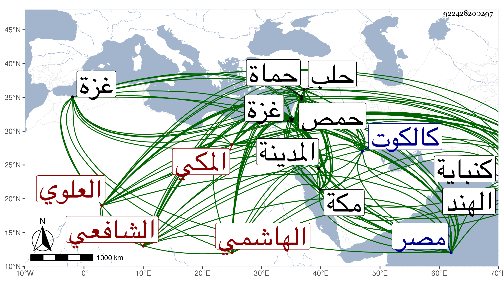

0902Sakhawi.DawLamic.ITO20230111-ara1.EIS1600.922428200297
Biography ID: 922428200297
242
أبو بكر بن محمد بن محمد بن محمد بن محمد بن عبد الله بن فهد بن حسن ابن محمد المحب أحمد بن التقي أبي الفضل بن النجم أبي النصر بن أبي الخير الهاشمي العلوي المكي الشافعي الماضي أخوه النجم عمر وأبوهما ويعرف كسلفه بابن فهد ولد في يوم الخميس منتصف رمضان سنة تسع وثمانماة بمكة ونشأ بها فحفظ القرآن وكتابا في الحديث عمله له أبوه وغالب مجمع البحرين في فقه الحنفية ثم لما مات أخوه أبو زرعة محمد حوله شافعيا وحفظ حينئذ التنبيه ثم ألفية النحو خلا اليسير من آخرها وبكر به أبوه فأحضره ثم أسمعه على شيوخ مكة والقادمين إليها كأبي بكر المراغي والجمال بن ظهيرة وأبي الحسن علي بن مسعود بن عبد المعطي وأبي حامد بن المطري وابن سلامة والشموس الغراقي والشامي وابن الجزري وعلى جمع بالمدينة النبوية وأجاز له خلق كعائشة ابنة ابن عبد الهادي وعبد القادر الأرموي والشرف بن الكويك وحضر في الفقه دروس أبي السعادات بن ظهيرة والوجيه عبد الرحمن بن الجمال المصري والبرهان الزمزمي وكذا حضر عنده وعند الجلال عبد الواحد المرشدي في النحو ولم يتميز ودخل عدة بلاد للتنزه منها بلاد الهند مرتين مرة إلى كالكوت في سنة أربعين ومرة إلى كنباية في سنة سبع وأربعين ومصر والقدس والخليل وغزة والرملة وحمص وحماة وحلب في التي بعدها ولم يسمع بها شيئا سوى أنه سمع على شيخنا بمصر قليلا وأقام ببلده ملازما للنساخة لأبيه وأخيه وغيرهما حتى كتب بخطه الكثير من الكتب الكبار كشرح البخاري لشيخنا مرتين وتفسير ابن كثير وتاريخ ابن الاثير وشرح المنهاج للدميري ولأبي الفتح المراغي وما يفوق الوصف وهو أحسن خطا من أخيه مع مشاركة له في السرعة والصحة وقد حملت عنه أشياء في المجاورة الأولى ثم لقيته في المجاورتين بعدها وكتب لي أشياء من تصانيفي ولكن ما جئت حتى ضعفت حركته جدا ثم بلغني أنه كسر فانقطع وتعب ابن أخيه بسببه فهو زائد التبذير عديم التدبير وكانت فيه عصبية ومساعدة وتودد وسلامة فطرة مع بادرة تصل إلى ما لا يليق به بدون دربة وحدث باليسير وكان إذا طلب منه ذلك بعد أخيه يأبى ويبكي ولم يزل منقطعا لضعف حركته ومع ذلك فلم يتخلف عن الحج حتى مات في ليلة الأربعاء سابع عشري ربيع الأول سنة تسعين ودفن بمقبرتهم من المعلاة على أبيه وأخيه رحمهم الله وإيانا .
